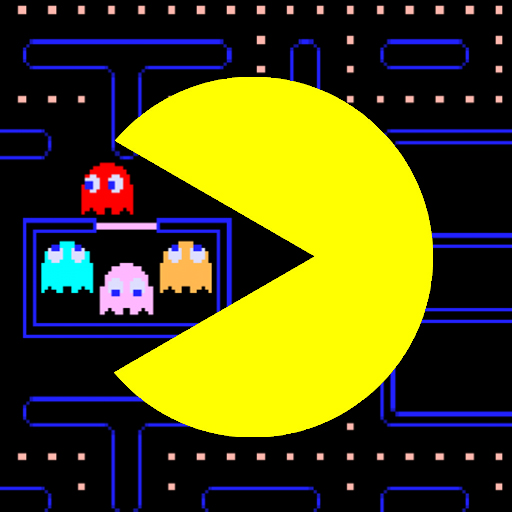

Other characters:

BLINKY is the leader of the Ghosts!
He is very quick and persistent.

INKY is capricious, sometimes chasing and
sometimes running away from PAC-MAN. He’s a bit shy!

CLYDE is a free-spirited wanderer who likes
to explore every corner of the maze.

PINKY is the strategist of the group, anticipating and
ambushing PAC-MAN at every chance!

Eat POWER-PELLETS and the Ghosts turn to blue! With the
tables turned, PAC-MAN is free to chase and chomp the ghosts!

PAC-MAN’s yellow color and round shape are what makes him so iconic!
Always cheerful and happy, he loves to chomp anything and everything!
Pac-Man, originally called Puck Man in Japan, is a 1980 maze action video game
developed and released by Namco for arcades. In North America, the game
was released by Midway Manufacturing as part of its licensing agreement
with Namco America. The player controls Pac-Man, who must eat all the
dots inside an enclosed maze while avoiding four colored ghosts.
Eating large flashing dots called "Power Pellets" causes the ghosts to
temporarily turn blue, allowing Pac-Man to eat them for bonus points.

Game development began in early 1979, directed by Toru Iwatani with a nine-man team.
Iwatani wanted to create a game that could appeal to women as well as men, because
most video games of the time had themes of war or sports. Although the inspiration
for the Pac-Man character was the image of a pizza with a slice removed, Iwatani has said
he also rounded out the Japanese character for mouth, kuchi. The in-game characters were
made to be cute and colorful to appeal to younger players. The original Japanese title
of Puck Man was derived from the Japanese phrase "Paku paku taberu" which refers to
gobbling something up; the title was changed to Pac-Man for the North American release.
Pac-Man was a widespread critical and commercial success, leading to several sequels,
merchandise, and two television series, as well as a hit single by Buckner & Garcia.
The character of Pac-Man has become the official mascot of Bandai Namco Entertainment.
The game remains one of the highest-grossing and best-selling games, generating more than
$14 billion in revenue (as of 2016) and 43 million units in sales combined, and has an
enduring commercial and cultural legacy, commonly listed as one of the greatest video games of all time.